Day 2: Exploring the United States
Introduction to the United States
The United States is a big country in North America with 50 states. It has many different places to see, like cities, forests, mountains, and beaches.
Big Cities
Some of the biggest cities are New York City, Los Angeles, and Chicago. Each city has lots of interesting things to see and do.
Famous Places
The United States has many famous landmarks, like the Statue of Liberty, the Grand Canyon, and the White House.
Culture
People in the United States come from many different backgrounds, so there are lots of different foods, music, and traditions. English is the main language, but many people speak Spanish and other languages too.
Heroes
Heroes from the United States include Abraham Lincoln, who helped end slavery, and Amelia Earhart, a famous pilot.
States, Their Flags, and Capital Cities in the United States
| State | Flag | Capital City |
|---|---|---|
| Alabama |  |
Montgomery |
| Alaska |  |
Juneau |
| Arizona |  |
Phoenix |
| Arkansas | Little Rock | |
| California | 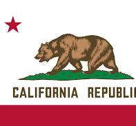 | Sacramento |
| Colorado | 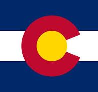 | Denver |
| Connecticut |  |
Hartford |
| Delaware | 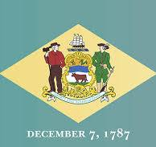 | Dover |
| Florida |  |
Tallahassee |
| Georgia | Atlanta | |
| Hawaii | Honolulu | |
| Idaho | Boise | |
| Illinois |  |
Springfield |
| Indiana |  |
Indianapolis |
| Iowa |  |
Des Moines |
| Kansas | Topeka | |
| Kentucky |  |
Frankfort |
| Louisiana |  |
Baton Rouge |
| Maine |  |
Augusta |
| Maryland |  |
Annapolis |
| Massachusetts |  |
Boston |
| Michigan |  |
Lansing |
| Minnesota |  |
Saint Paul |
| Mississippi | Jackson | |
| Missouri | Jefferson City | |
| Montana |  |
Helena |
| Nebraska | Lincoln | |
| Nevada |  |
Carson City |
| New Hampshire |  |
Concord |
| New Jersey | 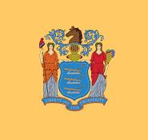 | Trenton |
| New Mexico |  |
Santa Fe |
| New York | 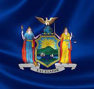 | Albany |
| North Carolina | 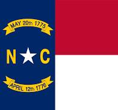 | Raleigh |
| North Dakota | 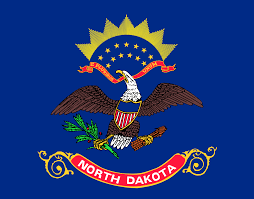 | Bismarck |
| Ohio | 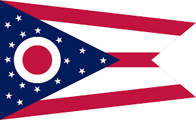 | Columbus |
| Oklahoma |  |
Oklahoma City |
| Oregon | 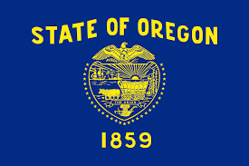 | Salem |
| Pennsylvania |  |
Harrisburg |
| Rhode Island |  |
Providence |
| South Carolina | 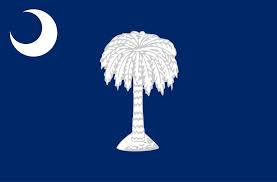 | Columbia |
| South Dakota |  |
Pierre |
| Tennessee | Nashville | |
| Texas |  |
Austin |
| Utah | Salt Lake City | |
| Vermont |  |
Montpelier |
| Virginia |  |
Richmond |
| Washington | 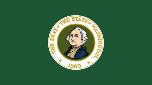 | Olympia |
| West Virginia | 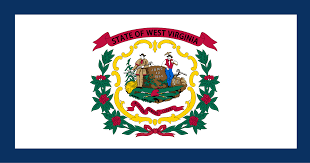 | Charleston |
| Wisconsin | 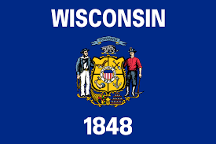 | Madison |
| Wyoming |  |
Cheyenne |
Important States
California
Yosemite National Park in California is famous for its giant sequoias and beautiful waterfalls.
California is the most populous state and is known for its entertainment industry in Hollywood, its technology hub in Silicon Valley, and natural wonders like Yosemite National Park.
New York
The Statue of Liberty in New York City is a symbol of freedom and democracy.
New York is home to the largest city in the U.S., New York City, which is known as the "Big Apple." It's famous for landmarks like the Statue of Liberty, Times Square, and Central Park.
Texas
The Alamo in Texas is a historic site from the Texas Revolution.
Texas is the second-largest state by both area and population. It's known for its oil industry, cowboy culture, and the Alamo in San Antonio.
Florida

The Everglades in Florida are a unique wetland ecosystem home to many rare species.
Florida is known for its warm weather, beautiful beaches, and popular tourist attractions like Walt Disney World.
Illinois
Chicago, Illinois, is famous for its impressive skyline and deep-dish pizza.
Illinois is home to Chicago, one of the largest cities in the U.S., known for its architecture, museums, and vibrant culture.
Hawaii
Hawaii's active volcanoes are one of the state's most remarkable natural features.
Hawaii is the only U.S. state made up entirely of islands and is famous for its tropical climate, beaches, and volcanic landscapes.
Alaska
Alaska's glaciers are stunning and are a major attraction for visitors.
Alaska is the largest state in the U.S. by area, known for its rugged wilderness, glaciers, and rich wildlife.
Massachusetts
Boston in Massachusetts is one of the oldest cities in the United States.
Massachusetts is rich in American history, with Boston being a key city in the American Revolution and home to many historical landmarks.
Arizona

The Grand Canyon in Arizona is one of the most famous natural wonders in the world.
Arizona is known for its desert landscapes, the Grand Canyon, and its Native American heritage.
Pennsylvania
The Liberty Bell in Pennsylvania is a symbol of American independence.
Pennsylvania played a crucial role in American history, being the site of the signing of the Declaration of Independence and the location of the Liberty Bell in Philadelphia.
States, Their Flags, and Capital Cities in the United States
| State | Flag | Capital City |
|---|---|---|
| Alabama | |
Montgomery |
Did You Know?
- Alaska is the largest state in the United States, but it has one of the smallest populations.
- Hawaii is the only state made up entirely of islands.
- Rhode Island is the smallest state by area, but it's rich in history, being one of the original 13 colonies.
- Mount Whitney in California is the highest point in the contiguous United States.
- Texas was once an independent country known as the Republic of Texas before joining the United States in 1845.
- Florida is home to the oldest city in the U.S., St. Augustine, founded by the Spanish in 1565.
- Illinois is known as the "Land of Lincoln" because Abraham Lincoln lived there before becoming president.
- Arizona's Grand Canyon is over 1 mile deep and reveals nearly 2 billion years of Earth's history.
- Pennsylvania is home to Hershey, the town famous for its chocolate factory and theme park.
- Massachusetts is where the famous "Boston Tea Party" took place, an important event leading up to the American Revolution.